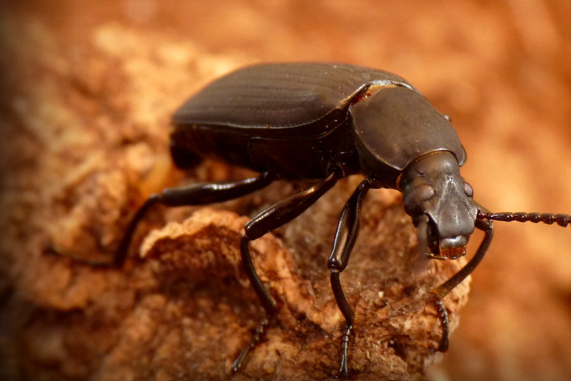

Zophobas morio es un escarabajo de la familia Tenebrionidae, de cuerpo alargado y color negro brillante en su etapa adulta. Sus larvas son alargadas, segmentadas y de color marrón oscuro, conocidas por su tamaño considerable. Se alimenta principalmente de materia orgánica y es utilizado frecuentemente en la alimentación de animales insectívoros.